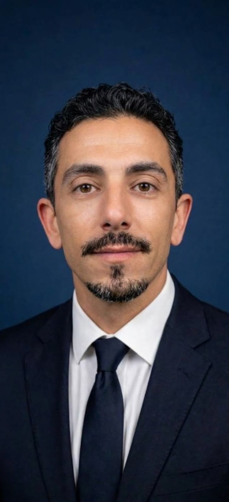

Atuar como Técnico Eletrônico Pleno/Sênior, Técnico Eletroeletrônico ou Técnico em Automação Industrial. Mais de 10 anos de experiência prática comprovada em manutenção corretiva, preventiva e preditiva de sistemas eletrônicos industriais e rodoviários, diagnóstico avançado e reparo de placas de circuito impresso (PCI), fontes chaveadas, inversores de frequência e controladores CLP. Graduando em Análise e Desenvolvimento de Sistemas.
Manutenção técnica, ajuste mecânico/eletrônico em maquinário industrial e diagnóstico rápido para redução de downtime.
Reparo e testes em equipamentos eletrônicos industriais, substituição de componentes SMD/discretos e calibração de instrumentos.
Destaque de Projeto: Concepção e execução completa de sistema de automação para fabricação de tintas (6.000 litros). Responsável pelo projeto elétrico, programação de CLP WEG Clic02, parametrização de inversores e comissionamento.